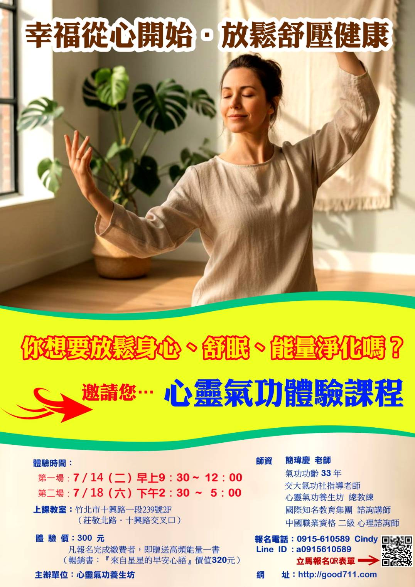
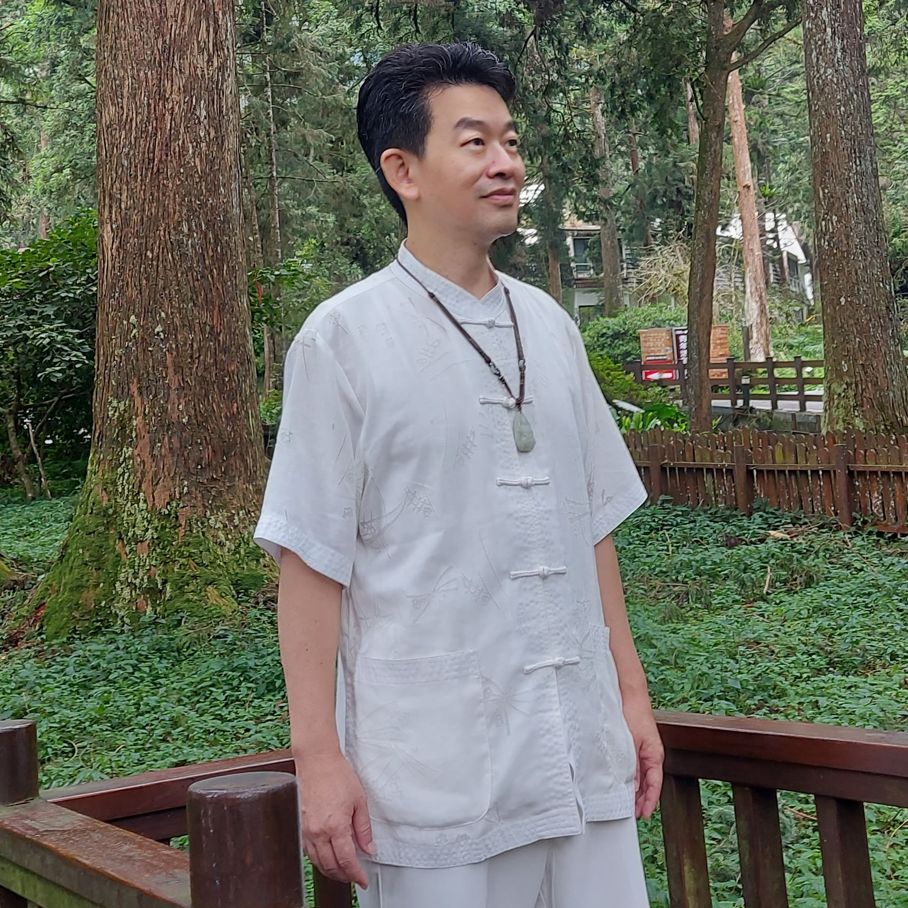
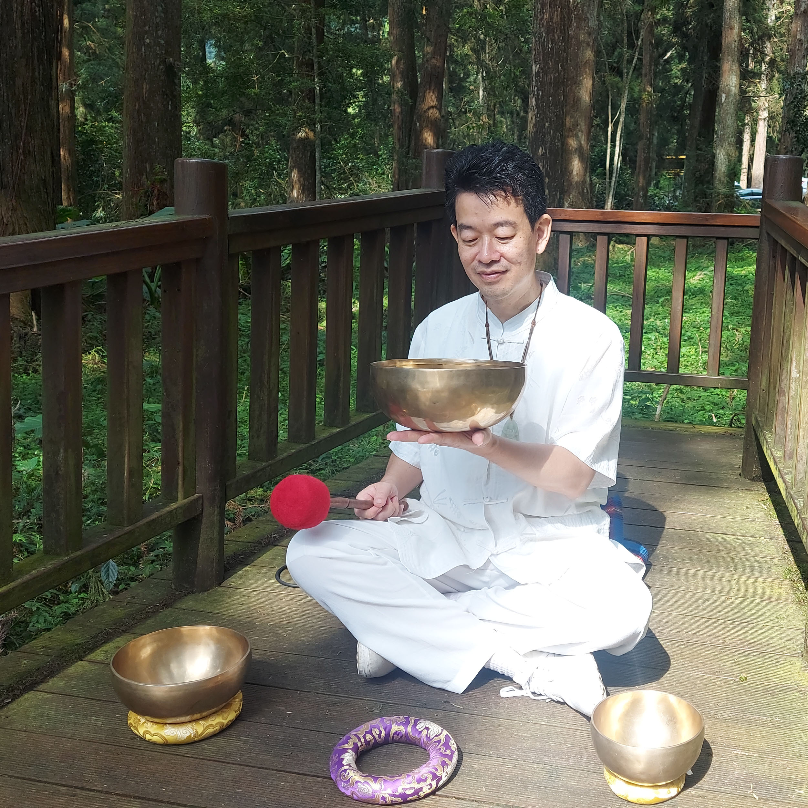

以氣功排除濁氣、轉化低頻訊息場，補充元氣與能量，達到身心靈健康喜悅之養生之道，邁向身心靈合一的境界！

以龍門宗氣功為核心，丹田提氣、內氣運行經絡，循序漸進地疏通任督二脈，紮實穩健。
結合西方心理學與量子科學的『訊息場』觀念，覺察並轉化內在負向價值觀與低頻能量。
透過調息、站樁、行功與靜心，排除濁氣、補充正氣，建立長期可持續的自我修習。
以階段化教學，從初學入門到覺醒靜心，配合實作與回饋，讓成效可被看見與複利。
結合東方『龍門宗氣功』（功齡33年）與西方『心靈轉化』及量子科學『訊息場』，強調性命雙修，帶領學員走向身心靈合一。


↑ 影片：如何腹式吸呼？（入門必看）
↑ 影片：氣功初學者如何調息？
從覺察到靜心，分享身心穩定與能量提升的轉變。
視老師為覺醒引領者，肯定課程的系統性與可實作性。
由入門到深化，分享在工作與生活中的具體受益。
西醫的『健康指數』也在提升中，『心靈』更是不斷地的成長
他的笑容愈來愈多，身體是愈來愈健康、愈來愈舒服了
旅美背景的管理經驗，帶來跨文化的學習視角與啟發。
以科學工程背景切入，分享能量練習的理性體驗。
以企業經營者角度，談身心平衡如何助益事業與家庭。
一年多前從第一階學到第五階，再進階學習第四階，分享如何轉化外星生物靈、家族業力、觀天壽與急救心法，收穫滿滿，CP值超高！
每週與先生開車來上課，感受到老師的覺醒之光，也將心法落實在生活與家庭中，能量提升顯著。
7年來持續學習，第七階複訓後提升自我覺察力，學習超意識與超時空心法，成為高頻能量療癒茶師。
第三階學習轉化怨念、冤親債主與流感等心法，幫助自身與家人，是極具價值的課程。
分享遇到前世冤親債主討債的實例，覺得課程非常值得上，推薦給所有學完心靈氣功五階的學員。
十多年來學習心靈氣功，透過第三階複訓蛻變成更自在、更有自信的自己。
在台期間跟隨老師學習，心境轉化成長，開始以身作則幫助親友。
從開悟卡了解潛意識信念並轉化，生命更加自在與快樂。
分享符咒背後的真相與心靈控制，建議遠離符咒依賴，並轉向高頻能量學習。
從第一到第五階一路學習後進入第一階茶氣定淨靜，學會清理訊息場，推薦課程給所有有緣人。
課堂中親身體驗家族業力轉化，黑色低頻能量轉為白光，深信宇宙實相值得學習與推薦。
#氣功
#任督二脈
#心靈轉化
#訊息場
#覺醒靜心